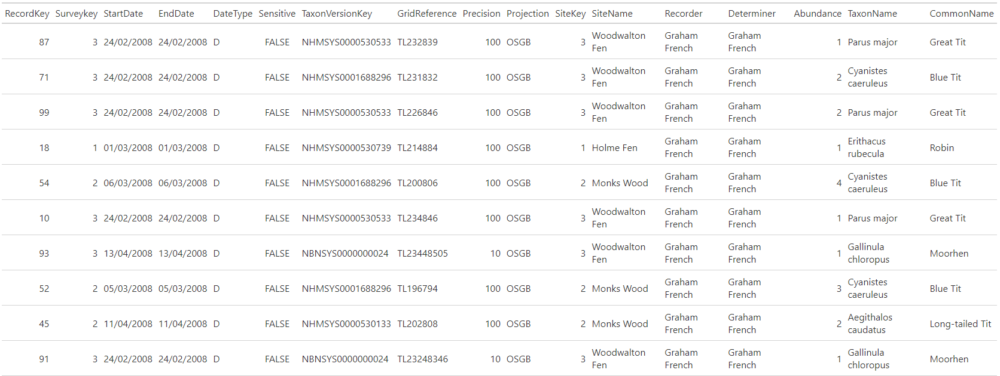

This dataset contains sightings of 10 common birds species within three national nature reserves, Monks Wood, Woodwalton Fen and Holme Fen, occuring in or adjacent to TL28 10km grid square, recorded in 2008 for the purpose of demonstrating the functionality of the NBN Gateway. This website collated and made freely available biological species records across the UK. It was superseded in March 2017 by the NBN Atlas.
nbn_demonstration_dataset
A tibble with 100 rows and 17 variables.
Primary key associated with the occurrence record.
Identifier key for the survey.
Start date of vague date range.
End date of vague date range.
Date type of vague date range.
Whether the record is sensitive or not.
Identifier key for taxon version in UK Species Inventory.
Grid reference of occurrence record.
Spatial precision of the georeference in metres.
Projection system for the grid reference.
Identifier key for the site.
Name of the site or location where the species was recorded.
Name or list of names for one or more recorders for the species record.
Name or list of names for one or more determiners for the species record.
Attribute field containing number of individuals recorded.
Attribute field containing scientific name of species recorded.
Attribute field containing common name of species recorded.
Sample of 10 rows from nbn_demonstration_dataset dataset.

suppressPackageStartupMessages({ library(store) suppressWarnings({ library(dplyr) library(gt) library(fs) }) }) # create figures directory dir_create(path(tempdir(), "figures")) # create html table nbn_demonstration_dataset %>% slice_sample(n = 10) %>% gt_preview(top_n = 10, incl_rownums = FALSE) %>% gtsave(path(tempdir(), "figures", "nbn_demonstration_dataset.html")) # convert to image ## pagedown::chrome_print cropped the table columns ## manually produced the image from screenshot of html page